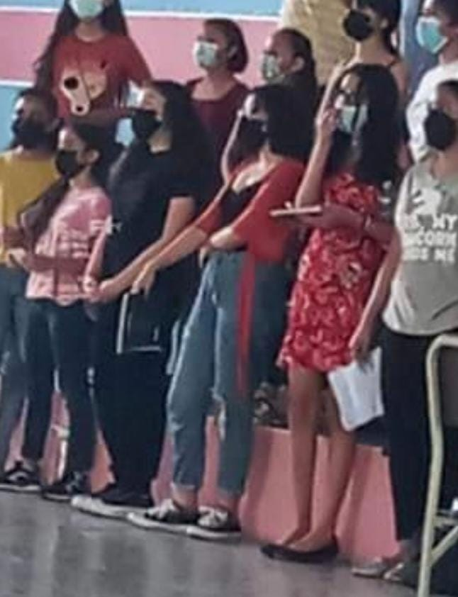
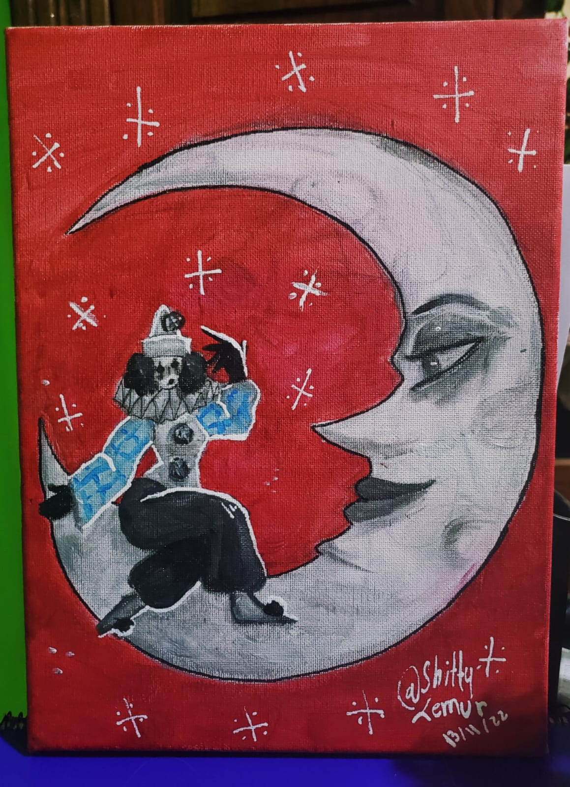
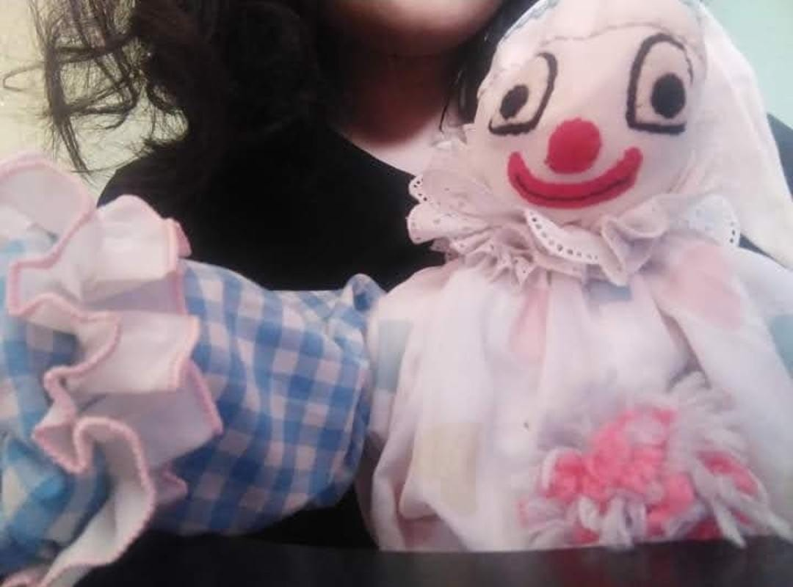
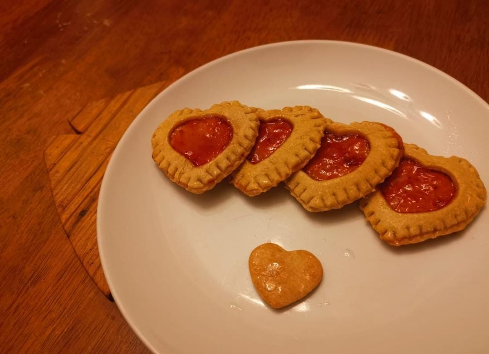

¿Quién Soy?
¡Hola! Mi nombre es Lissy Espinoza,
en este post mi nombre artístico por el cual doy a conocer mis obras es "ShittyLemur" o
abreviadamente "Lem". Soy una artista independiene la cual he comenzado toda mi trayectoria
desde que tenía unos 12 años, tomando un poco más en serio el arte digital a mis 13, 14 años de edad.
De igual manera trataré de hablar un poco de mi misma y de que me conozcas en persona.
Muchos de mis hobbys se centran muchísimo en el arte, ya que soy una gran entusiasta de este,
yendo desde desempeñar muchas artes desde lo manual, auditivo, digital, etc.
Dediqué 3 años al canto, estando en grupos de este ya que no tengo
el valor de hacerlo sola,
siempre he pertenecido a grupos, nunca como solista (Incluyendo el coro del colegio) |
 |
|  |
Me encanta la pintura acrílica, me fascina pintar cuadros y dedicarle tiempo a los detalles
y dejarlos para mi cuarto. |
| Me gusta buscar juguetes y repararlos para dejarlos en mi cuarto también. |
 |
|  |
Me gusta hornear, hobby que descubrí desde que la pandemia estaba en su mayor nivel,
desde entonces amo hacer postrecitos para el deguste de mis conocidos y amigos. |
| Amo el dibujo digital, al cual le he dedicado casi 6 años de mi vida. |
 |
- Tengo 17 años, aunque en el 28/06 tendré 18.
- Sé dos idiomas y estaba estudiando un tercero, aunque me quedé en lo básico.
- Me gusta la animación en general, consumo mucho el contenido y aspiro aprender a animar un día.
- Me gusta la historia, me gusta aprender sobre distintas culturas y la historia detrás de esta.
- Poseo una gata llamada Haru
- Mi cantante favorita es Mitski.
- Mi banda favorita es Rammstein.
- Me gusta la animación en general.
- Me gustan mucho los gatos, mucho mucho.
- El color rojo es mi favorito.
- Mi anime favorito es Jojo's Bizarre Adventure
- Mi personaje favorito es Kakyoin
- Gustos musicales